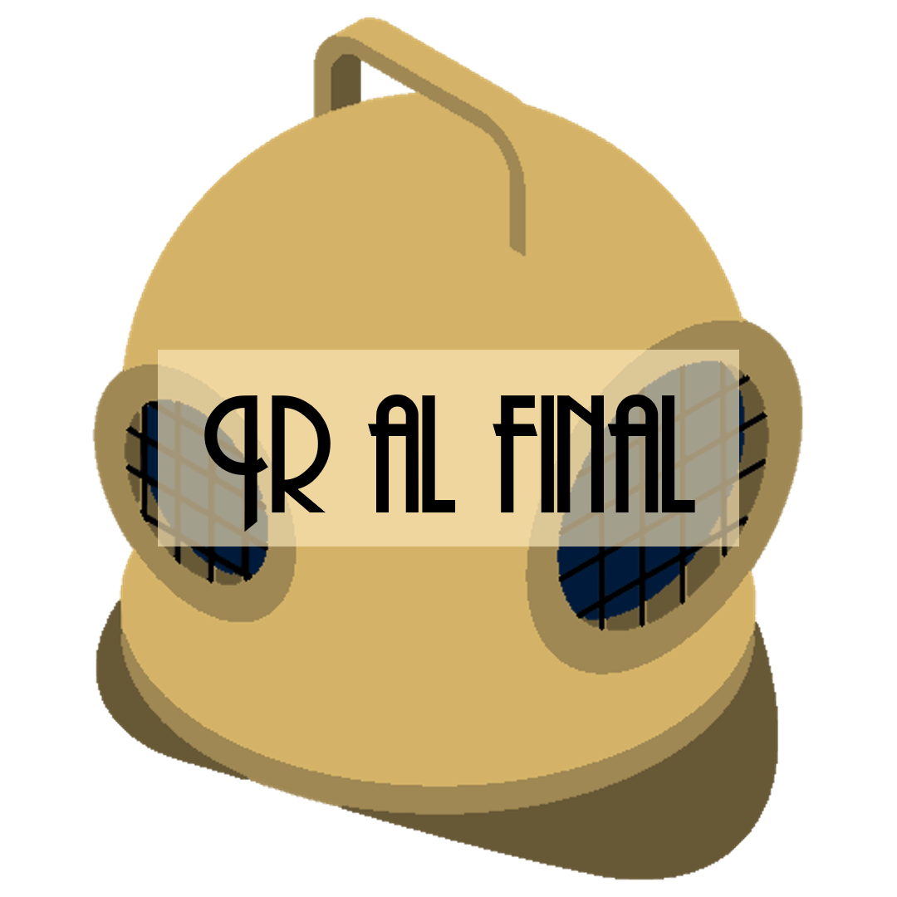
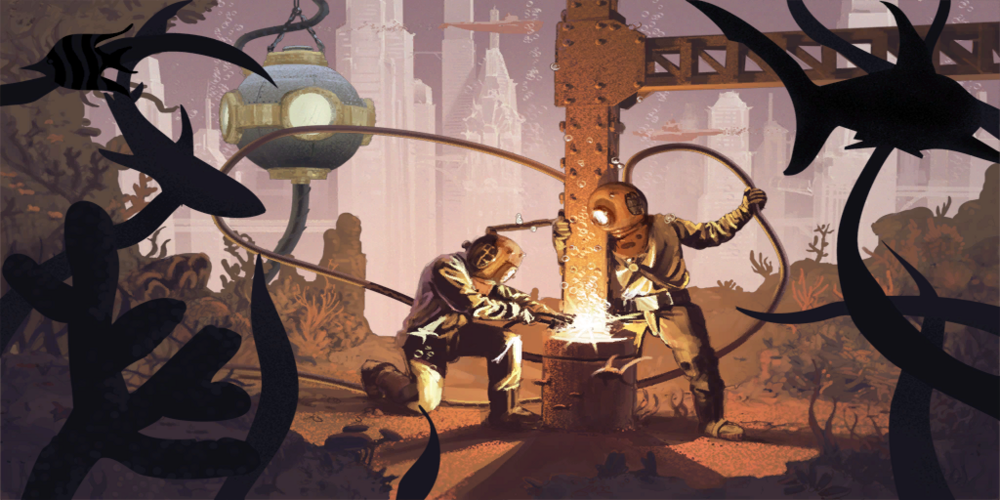
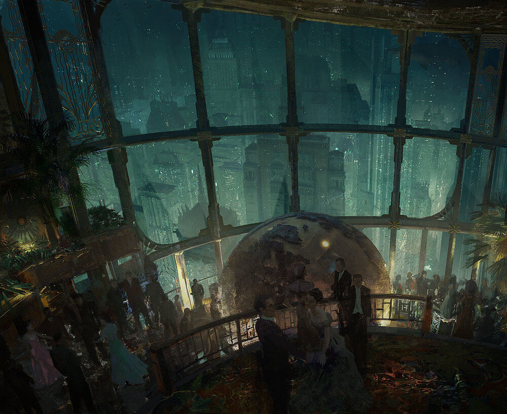
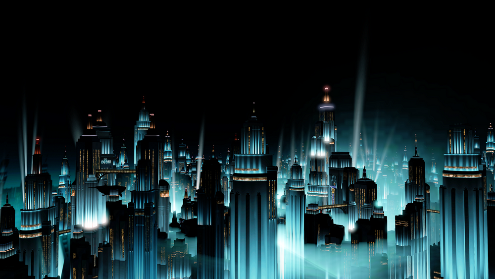
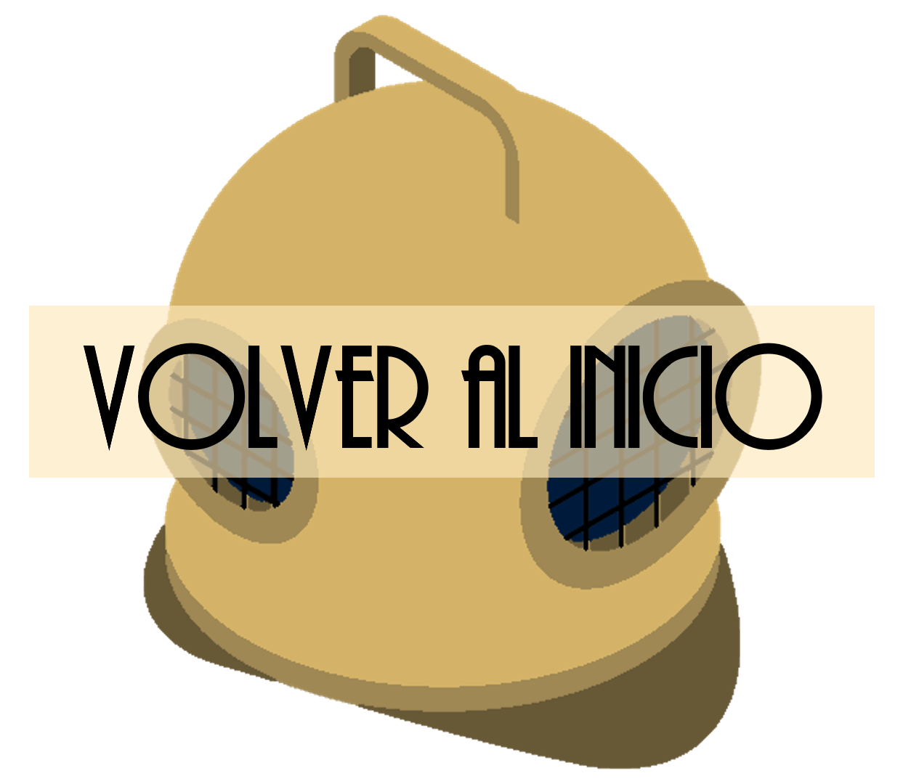

Rapture comenzó como un sueño de Andrew Ryan mucho antes de su construcción. Ryan había pensado en un lugar así al menos una década antes de que se eligiera una ubicación viable. Había escapado de Bielorrusia justo antes de que se convirtiera en parte de la Unión Soviética bajo el dominio del comunismo y se había abierto camino para convertirse en un magnate industrial en Estados Unidos. Había llegado a ver a los "sindicatos de trabajadores", colectivistas de izquierda, políticos que venden altruismo y la religión organizada como parásitos arruinando la vida del hombre en la Tierra. Exploró la idea de una sociedad cerrada, de reunir a los triunfadores y a aquellos que creían en el empoderamiento del individuo y permitirles florecer en algún lugar remoto no contaminado por el resto del mundo.
Cuando los bombardeos atómicos de Hiroshima y Nagasaki pusieron fin a la Segunda Guerra Mundial, y la URSS estaba en su propio camino hacia las armas nucleares, Ryan previó la inevitable destrucción de la humanidad en una guerra que terminaría en fuego nuclear. Ryan no perdió el tiempo en ponerse en contacto con personas de ideas afines y reunir sus recursos para hacer realidad su visión. Su ciudad, Rapture, se construiría en el lecho marino del Atlántico Norte, con una ubicación adecuada entre Islandia y Groenlandia.
Andrew Ryan navegó en un yate en medio del Océano Atlántico en 1941, justo cuando tuvo una visión acerca de un mundo sin “parásitos", donde el hombre podía ser libre y podía ganarse la vida sin necesidad de que otros se entrometieran, especialmente el gobierno. Corrió hacía la proa y gritó:
"¡Aquí, aquí es donde construiremos!" ―Andrew Ryan, fundando la ciudad de Rapture.
Ryan reunió a muchos expertos en construcción y consiguió que los arquitectos prepararan el diseño de muchos de los edificios de Rapture. Ryan necesitaba trabajadores para construir Rapture y contrató a muchos de los ingenieros, obreros y mecánicos más talentosos y calificados. Muchos, compartieron los ideales de Ryan y vieron a Rapture como un nuevo comienzo en el que podían superar las deficiencias del mundo plagado de parásitos.
A partir de finales de 1945, Ryan contrató a una serie de empresas para comenzar la construcción de Rapture en la ubicación seleccionada entre Islandia y Groenlandia. Ryan y sus asociados aseguraron los materiales de fabricación en secreto para evitar atraer atención no deseada. Estos recursos fueron luego transportados por barcos como el Olympian miles de millas a través del Atlántico Norte hasta el sitio del proyecto. Allí, los materiales se sumergieron en el fondo del océano a través de una plataforma sumergible gigante de última generación apodada "La Plomada".
Los soldadores y mecánicos de aguas profundas crearon una base para la ciudad hundiendo pilotes y vigas profundamente en la roca y el suelo. Finalmente, "La Plomada" quedó anclada de forma permanente en el fondo del mar. Los edificios prefabricados con marcos de aluminio se ensamblaron cerca de la superficie, se sumergieron y bajaron con anillos de luneta y se anclaron en los cimientos, creando así la "metrópolis Art Déco".

El 5 de noviembre de 1946, Rapture comenzó a recibir a sus primeros residentes. El período de construcción principal continuó hasta finales de la década de 1940, con proyectos más pequeños que continuaron en la ciudad y sus alrededores hasta que la construcción de Rapture se completó por completo en 1951.
Rapture sería oficialmente abierta el 5 de noviembre de 1946, pero en su mayoría recibía a ingenieros y trabajadores necesarios para la construcción de Rapture. Una vez acabada la mayor parte de la ciudad, Andrew Ryan puso en marcha un ambicioso proyecto de apertura en el que invitaría a las gentes a vivir en la utopía submarina que él había diseñado.
Dado que Rapture era una ciudad construida en secreto, su apertura no podía ser anunciada de cualquier modo, así que Ryan y su círculo de informadores pusieron en marcha una operación secreta para atraer población al "sueño de Rapture", donde cada persona era libre de elegir lo mejor para sí misma, donde los científicos y creadores no estarían limitados por la moralidad, donde el artista no temería al censor. Se calcula que tal proyecto de apertura costó varios millones de dólares, los cuales no fueron invertidos en vano, ya que la ciudad alcanzó casi su máximo número de habitantes antes de que se construyera totalmente. Tal proyecto se llevó a cabo desde el año 1946 hasta 1951, aproximadamente, y comienza a recibir a toda clase de habitantes del mundo que Andrew Ryan considera los pobladores perfectos para su nueva utopía.
Para esto comienza una discreta operación de "reclutamiento" para lo "mejor de lo mejor", incluyendo científicos, deportistas, escritores y artistas entre otros. Este proceso, por más discreto que fuera, fue notificado por muchas personas, y se le conocería como "El Rapto". En 1951 la ciudad es completamente acabada (teniendo aproximadamente 5 kilómetros de diámetro).

Desde su apertura inicial hasta su ocupación en 1946 en adelante, Rapture floreció. Construida con las últimas maravillas tecnológicas de la superficie y con una economía activa y en crecimiento respaldada por la riqueza, el idealismo y una nueva población, Rapture se convirtió en una utopía capitalista a la imagen de Andrew Ryan. En comparación con la mayor parte del mundo de la superficie, Rapture podría verse como una utopía, ya que todos tienen derecho a cosechar libremente las recompensas de su propio trabajo sin interferencias externas.
Rapture experimentó una estabilidad económica y social durante muchos años. Como muestra de esto, muchos negocios fueron exitosos por todo Rapture. Otro factor que demostró el avance fueron los grandes descubrimientos científicos que tuvieron lugar a mediados de los años 50, principalmente por la doctora Brigid Tenenbaum, el doctor Yi Suchong , Augustus Sinclair, la doctora Sofia Lamb, y en el arte por Sander Cohen .

